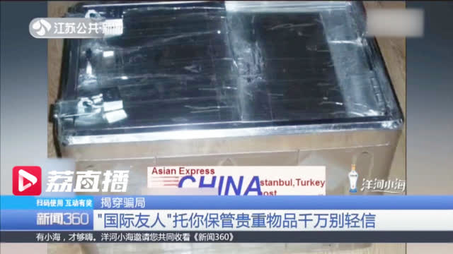

回复@来自推特的网友:一旦金融资产超过1000万（有房），就只是数字了…//@来自推特的网友:一旦盈利超过50个点，就没什么感觉了@ETF拯救世界:传媒新高 医药新高 养老新高 环保新高 500新高踏踏实实的拿着。你成本那么低。好好享受赚钱的乐趣吧。
这种人怎么存下2万的@新浪视频:【"国际友人"寄来一箱钱求保管 女子给了2万多元“运费”发现被骗】3月6日，南京李女士报警称被网上认识的“国际友人”骗了。一名外国人与她视频，自称账户遭冻结，有一箱叙利亚总统给的现金，请她帮忙保管。“快递公司”发来箱子和快递单照片，收了李女士2万多元“快递费”。万幸这笔钱被及时止付。视频-"国际友人"寄来一箱钱求保管 女子给了2万多元“运费”发现被骗 9万次播放 01:54
一个数据：如果一个品种跌80%买入，回到下跌前涨幅是400%。为什么这一波上涨计划整体涨幅没有100%跟上指数，然而却早早先于所有指数不断创出新高？因为熊市没有赔钱，同时回撤极小。每一个点的上涨都是新高利润。有人说控制回撤没有意义。不好意思，我认为控制回撤是最重要的。还记得那道第一年上涨40%，第二年下跌20%的数学题吗？熊市不赔钱，牛市跟上。甚至只跟上70%的意义，没几个人能真正了解。
回复@云在彼端119:千万别以为钻石坑买了就能赚大钱。上涨过程中死死拿住才是最大的考验。即使我天天这么说，依然有15%的人这一路不断卖出就是一个例子//@云在彼端119:周围有同事在低估的时候听别人建议买的股票，盈利了3个点卖出，果然对于普通人来说拿住是一个很难的事情@ETF拯救世界:传媒新高 医药新高 养老新高 环保新高 500新高踏踏实实的拿着。你成本那么低。好好享受赚钱的乐趣吧。
回复@炫风__AB:你这种心态非常好。指数基金完全可以当成一种收藏品，尤其是低位买入的长期仓位。除非极度高估，不要随便卖。//@炫风__AB:有些人涨了就减仓了，但是我总感觉想多买些，不想卖，有点收集邮票那种感觉。就单纯想买了放着。@ETF拯救世界:传媒新高 医药新高 养老新高 环保新高 500新高踏踏实实的拿着。你成本那么低。好好享受赚钱的乐趣吧。